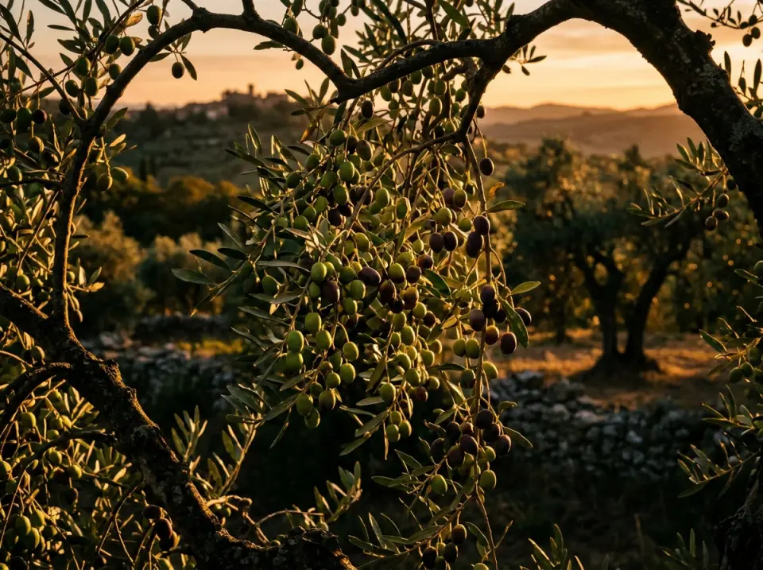

Què és Hanukkà?
Hanukkà (també escrit Janucá, Hanukkah o Chanukah) és la «Festa de les Llums» del calendari jueu. Dura vuit dies i se celebra a l’hivern amb l’encesa nocturna de la hanukkià (canelobre de nou braços), la recitació de benediccions especials i els menjars tradicionals fregits amb oli.
La paraula hebrea Hanukkà significa «inauguració» o «consagració», i commemora la reinauguració del Temple Sagrat de Jerusalem fa més de 2.100 anys, després de la victòria dels macabeus.
La història
Al segle II aC, la Terra d’Israel va quedar sota el domini de l’imperi grecosirià d’Antíoc Epífanes, que va intentar imposar la cultura i els rituals hel·lenístics al poble jueu: va prohibir l’estudi de la Torà i l’observança dels preceptes (mitzvot) i va profanar el Temple Sagrat de Jerusalem.
Contra tot pronòstic, un petit grup de jueus fidels però amb poques armes, liderats per Judà el Macabeu, es va enfrontar a un dels exèrcits més poderosos de l’època.
- Segle II aCAntíoc Epífanes prohibeix l’estudi de la Torà i les mitzvot, i profana el Temple de Jerusalem.
- La rebel·lióJudà el Macabeu i un grapat de fidels s’alcen contra un dels exèrcits més poderosos del seu temps.
- 25 de KislevEls macabeus recuperen el Temple Sagrat i el tornen a consagrar.
- Vuit dies de llumUn petit recipient d’oli pur, suficient per a un dia, crema durant vuit.
- AvuiEncenem la hanukkià cada nit per difondre el miracle: és la mitzvà de Pirsumei Nisà.
Sabies que…?
Segons una tradició, el nom Macabeu és l’acrònim de מִי כָמֹכָה בָּאֵלִם ה׳ (Mi Jamoja Baelim Hashem, «Qui com Tu entre els poderosos, oh Déu?»), el lema que duien als seus estendards.
Els dos miracles
La victòria
Els pocs i febles macabeus van derrotar el poderós exèrcit grec, el van expulsar de la Terra d’Israel i van recuperar el Temple Sagrat el 25 de Kislev.
L’oli
Quan van voler encendre la Menorà del Temple (canelobre de set braços), van descobrir que els grecs havien profanat pràcticament tot l’oli d’oliva ritual. Només van trobar un petit recipient intacte amb el segell del Gran Sacerdot, amb oli suficient per cremar un sol dia, mentre que preparar oli pur nou els costaria vuit jornades. Miraculosament, aquella petita quantitat d’oli va cremar durant vuit dies i vuit nits sencers.

Per commemorar i difondre aquests miracles, els savis van instituir la festa de Hanukkà.
Una petita llum dissipa molta foscor
Els macabeus van combatre la foscor espiritual amb valentia; avui nosaltres ho fem sumant llum. La foscor és simplement l’absència de llum, de manera que qualsevol bona acció, per petita que sembli, té un impacte immens.